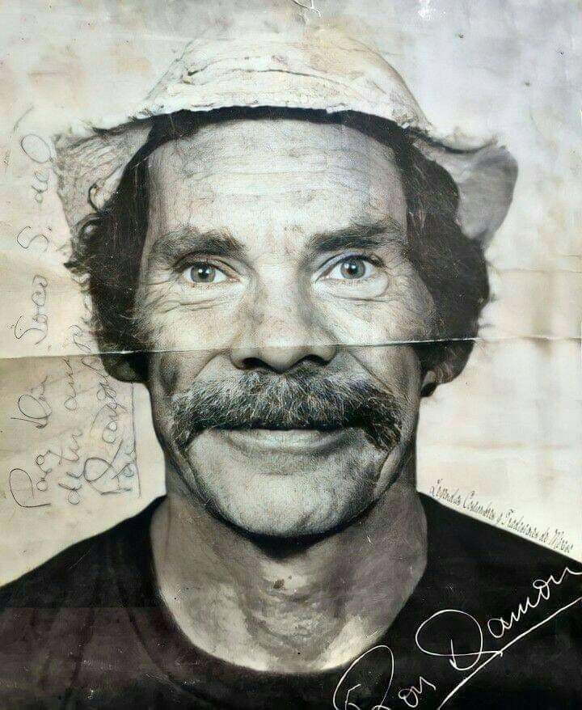
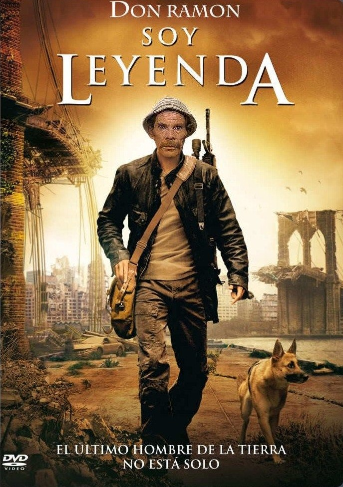

EL MERO DON RAMÓN
¿QUIEN ES?
El mero Don Ramon fue un personaje muy querido de la famosa serie mexicana El Chavo del 8
Características:
- Sabe boxear
- No paga la renta
- Se la juega de loco
Un capitulo memorable
Ver capitulo
Imágenes:


DON RAMÓN FR
20/08/2025